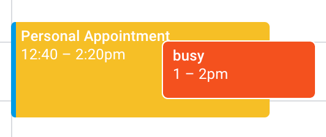

Personal Calander Sync #
In my career, I’ve mostly used Google Calendar at work. I also use multiple Google calendars for personal events (personal, shared, family, etc.). I can share these calendars with my work account, but my personal events do not show up as “Busy” to my coworkers. So I often have to invite my work account too all of my events, or manually create duplicate “Busy” events in my work calendar.
Then I found this article. Which links to this Google Apps Script. The process is exactly right, but the script I changed to support some more options.
Goal #
The goal is to automaticlaly create (and delete) busy blocks in my work calendar, with some time buffer to account for travel/context switching. Here’s an example:

The 1-2p event is from my personal calendar, as seen from my work account. The sync scrips has automatically creates a 12:40-2:20p event in my work calendar blocking it off from meeting invites.
Process #
This process is an abreviated version of this article. The only difference is the mention of multi-calendar support and different parameters to change.
- Share your personal calendars with your work account (no need to share event details)
- Get the Calendar ID for each of them (you can find them in the “settings” of the calander, by the “Share” section)
- Create a new Google Apps Script, and include this source code, updating the paramaters as desired:
- Set your external calendar IDs
- Set your buffer time (20 minutes means that a 8a-9a event will create a 7:40a-9:20a block in your work calander)
- Update your event details visibility, color, and title
- Configure how many days you want the script to look ahead (4 weeks by default)
- You can then run the scipt manually to sync and verify it works.
- Then head to the “Triggers” section of your project. For each calendar you’re syncing from, setup a new trigger to call the
syncfunction. Source it from a calendar whenver it is updated. Use the same calendar IDs you added to your script parameters.
That’s it, all done!
Script #
Here is my version of the script:
function sync() {
var secondaryCalIds = [];
secondaryCalIds.push("your@email.com");
secondaryCalIds.push("c_32523rewsf43v345v54b54b454@group.calendar.google.com");
var primaryEventTitle = "Personal Appointment";
var eventBufferMinutes = 20;
var eventBufferMs = eventBufferMinutes * 60 * 1000;
var visiblity = CalendarApp.Visibility.PUBLIC;
var color = CalendarApp.EventColor.YELLOW;
var today = new Date();
var endDate = new Date();
endDate.setDate(today.getDate() + 28); // how many days in advance to monitor and block off time
var secondaryEvents = [];
for (cid in secondaryCalIds) {
var secondaryCal = CalendarApp.getCalendarById(secondaryCalIds[cid]);
var srcEvents = secondaryCal.getEvents(today, endDate)
var secondaryEvents = secondaryEvents.concat(srcEvents);
Logger.log('Number of source events: ' + srcEvents.length + ' (' + secondaryCalIds[cid] + ')');
}
// create filtered list of existing primary calendar events that were previously created from the secondary calendar
var primaryCal = CalendarApp.getDefaultCalendar();
var primaryEventsAll = primaryCal.getEvents(today, endDate); // all primary calendar events
var primaryEvents = []; // to contain primary calendar events that were previously created from secondary calendar
for (pev in primaryEventsAll) {
var primaryEvent = primaryEventsAll[pev];
if (primaryEvent.getTitle() == primaryEventTitle) {
primaryEvents.push(primaryEvent);
}
}
Logger.log('Total number of target events: ' + primaryEventsAll.length);
Logger.log('Number of managed target events: ' + primaryEvents.length);
// process all events in secondary calendar
var statsCreated = 0, statsDeleted = 0;
var updatedPrimaryEventIds = []; // to contain primary calendar events that were updated from secondary calendar
for (sev in secondaryEvents) {
secondaryEvent = secondaryEvents[sev];
// include buffer around personal appoint (i.e. travel time)
var secondaryStart = new Date(secondaryEvent.getStartTime().getTime() - eventBufferMs);
var secondaryEnd = new Date(secondaryEvent.getEndTime().getTime() + eventBufferMs);
// if the secondary event has already been blocked in the primary calendar, update it
updated = false;
for (existingId in primaryEvents) {
var primaryEvent = primaryEvents[existingId];
if ((primaryEvent.getStartTime().getTime() == secondaryStart.getTime()) && (primaryEvent.getEndTime().getTime() == secondaryEnd.getTime())) {
primaryEvent.setDescription(secondaryEvent.getTitle() + '\n\n' + secondaryEvent.getDescription());
primaryEvent.setVisibility(visiblity);
primaryEvent.setColor(color);
updatedPrimaryEventIds.push(primaryEvent.getId());
Logger.log('EVENT UPDATED - id: ' + primaryEvent.getId() + ' (' + secondaryEvent.getTitle() + ')');
updated = true;
break;
}
}
if(updated) {
continue;
}
// skip all day, multi-day, or weekend events
var startDay = secondaryEvent.getStartTime().getDay();
var endDay = secondaryEvent.getEndTime().getDay();
if(secondaryEvent.isAllDayEvent() /*|| startDay != endDay */|| startDay == 0 || startDay == 6) {
continue;
}
// create a new event based on the secondary event
var newEvent = primaryCal.createEvent(primaryEventTitle, secondaryStart, secondaryEnd, {description:secondaryEvent.getTitle() + '\n\n' + secondaryEvent.getDescription()});
newEvent.setVisibility(visiblity);
newEvent.setColor(color);
newEvent.removeAllReminders();
statsCreated = statsCreated + 1;
Logger.log('EVENT CREATED - id: ' + newEvent.getId() + ' (' + secondaryEvent.getTitle() + ')');
}
// if a primary event previously created no longer exists in the secondary calendar, delete it
for (pev in primaryEvents) {
if (updatedPrimaryEventIds.indexOf(primaryEvents[pev].getId()) == -1) {
var pevIdToDelete = primaryEvents[pev].getId();
Logger.log(pevIdToDelete + ' deleted');
Logger.log('EVENT DELETED - id: ' + pevIdToDelete + '');
statsDeleted = statsDeleted + 1;
}
}
Logger.log('Events created: ' + statsCreated);
Logger.log('Events updated: ' + updatedPrimaryEventIds.length);
Logger.log('Events deleted: ' + statsDeleted);
}